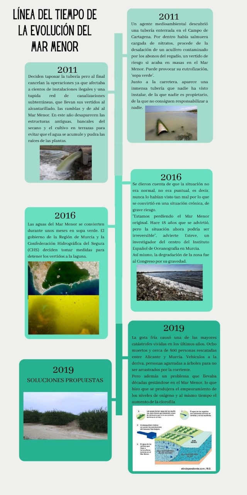
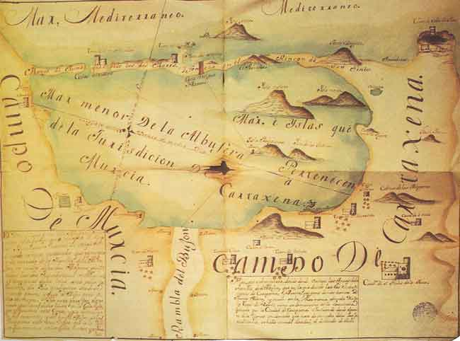

Línea del tiempo
Desde Green Global Action, queremos hablar sobre como se ha ido evolucionando la contaminación en nuestro entorno, y un claro ejemplo de esto proceso, lo podemos encontrar en el Mar Menor.

Historia del Mar Menor
El Mar Menor, que actualmente es una laguna, era hace diez millones de años una gran bahía abierta al Mar Mediterráneo. Pero los movimientos de formación de las montañas vertieron sedimentos a través de los ríos, procedentes del Campo de Cartagena, surgiendo así volcanes submarinos que dieron lugar a las islas actuales: Grosa, Mayor o del Barón, Perdiguera, Ciervo, Sujeto y Redonda, y al Monte El Carmolí.
La laguna que hoy conocemos como Mar Menor se formó en la era del Cuaternario (2.000.000 a. C.), sobre una que bahía se extendía desde la actual Cabo de Palos hasta lo que hoy conocemos como El Mojón (San Pedro del Pinatar), además, las corrientes marinas arrastraron arena que se acumuló en los islotes y promontorios volcánicos del litoral, conformando el largo y estrecho brazo conocido como La Manga.
A partir de entonces, el mar interior o Mar Menor se comunicaría con el Mediterráneo a través de una serie de canales o golas naturales que renuevan las aguas. Es decir, el Mar Menor, una laguna que tiene millones de años, la estamos destruyendo en alrededor de 200 años, es hora de hacer algo por él y por su historia. ¡Ayúdanos a cumplir este objetivo!
